Suzanne Collins website redesign
A mobile concept redesign that turns a wall of text into a site readers can find their way around.
- Discipline
- UX/UI design
- Role
- UX/UI designer
- Context
- UX design course, Interactive Media Management program
- Timeline
- May to August 2025
- Tools
- Figma
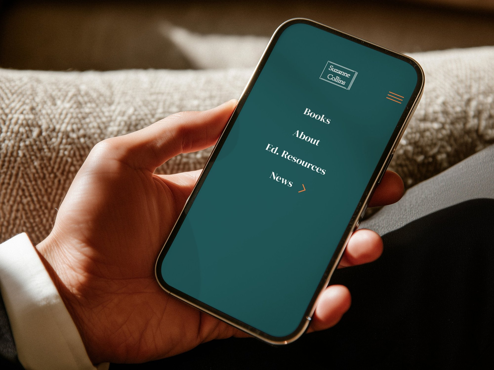
Overview
Suzanne Collins’ official website is dense with text, with a weak visual hierarchy and dated navigation. The problems are worst on a phone, where most readers are likely to land.
For this course project, I evaluated the current mobile site, turned what I found into clear themes, and redesigned the experience around one goal: help readers find her books and news quickly, and enjoy reading once they do.
Final design preview
A walkthrough of the redesigned mobile site: opening the menu, browsing Books, About and Ed. Resources, then using the News submenu to reach Updates, Interviews and Awards, with a back arrow on each news page that returns to the News menu.
Research
Evaluating the current site
I ran a mobile usability evaluation of the existing site and marked where it breaks down. Four problems kept showing up: poor readability, navigation confusion, content overload and a weak content structure.
The current mobile site, annotated with the main issues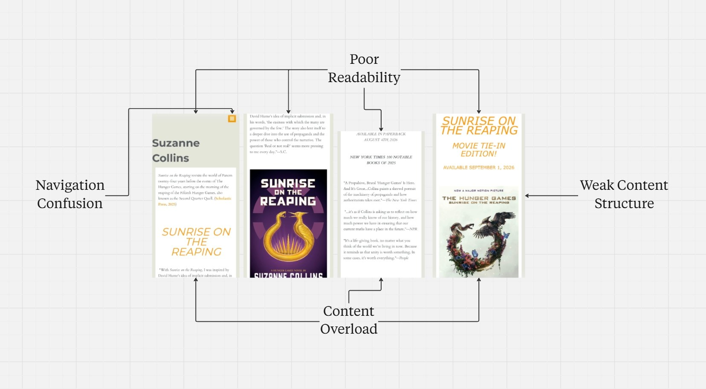
The current mobile site, annotated with the main issues Collecting feedback
I recorded ten feedback notes from the evaluation. People struggled to find her books quickly, found the long paragraphs hard to scan, and said the navigation didn’t show where to explore books.
Ten feedback notes from the usability evaluation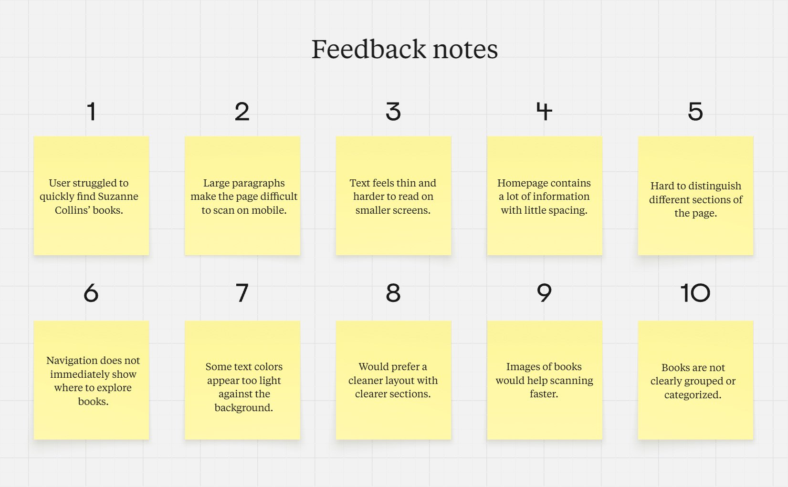
Ten feedback notes from the usability evaluation Finding the themes
I grouped the notes with thematic analysis. Four themes came out, and they shaped every design decision that followed.
Four themes from thematic analysis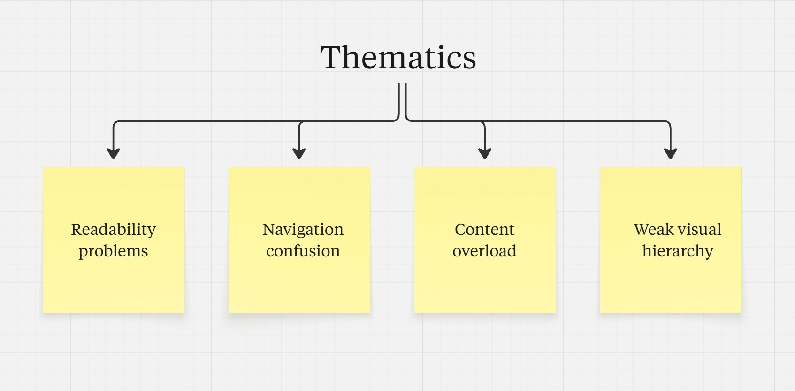
Four themes from thematic analysis
From themes to fixes
Readability problems
What I heard: large paragraphs are hard to scan, text feels thin on small screens, and some text colours are too light.
Fix: one type system with larger, heavier body text, more spacing, shorter paragraphs and stronger contrast.
Navigation confusion
What I heard: it was hard to find her books, and the navigation didn’t show where to explore them.
Fix: Books comes first in a simple four-item menu, and News opens a submenu with a back arrow on each news page.
Content overload
What I heard: the homepage packs in a lot with little spacing, and people wanted a cleaner layout.
Fix: one main message per screen, with supporting content revealed as you scroll.
Weak visual hierarchy
What I heard: sections are hard to tell apart, books aren’t grouped, and images of books would help.
Fix: clear headings, books grouped by series, and book covers to scan by.
Process
Sketches
I started on paper, sketching the Books, About and Resources pages. Each had the same menu (Books, About, Ed. Resources and News), a newsletter sign-up and a footer.
Paper sketches of the Books, About and Resources pages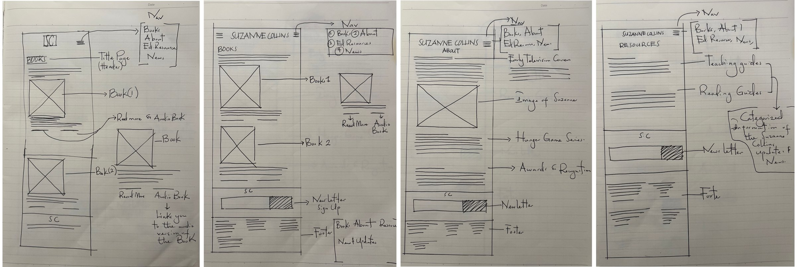
Paper sketches of the Books, About and Resources pages Information architecture
My first site map was broad: five book categories, nine About topics, and four types of news. As the design took shape, I narrowed it down to what readers need most. Books became the entry point, and News became a short submenu of Updates, Interviews and Awards.
The first site map, before I narrowed it down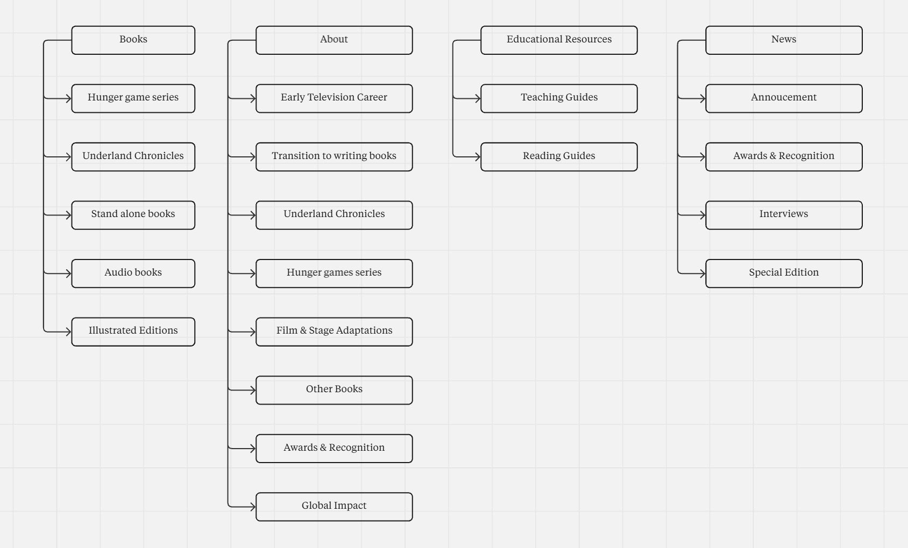
The first site map, before I narrowed it down Low-fidelity wireframes
I tested the structure in greyscale before adding any style: the main menu, the News submenu, book series laid out in rows, and an About page broken up by clear headings.
Low-fidelity wireframes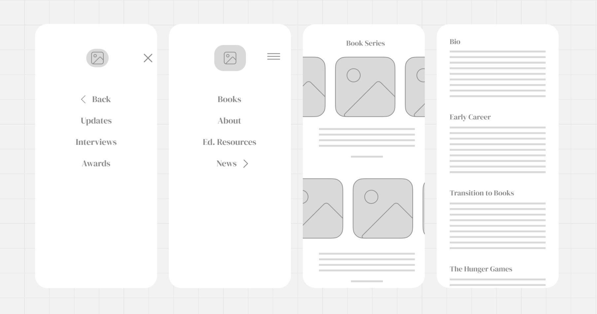
Low-fidelity wireframes
Visual design
A deep teal and warm cream give the site a calm, bookish feel. Orange is saved for things you can tap, like arrows and the menu.
Final design
Books leads the site. The menu is down to four items, News opens its own submenu, and every page shares the same newsletter sign-up and footer.
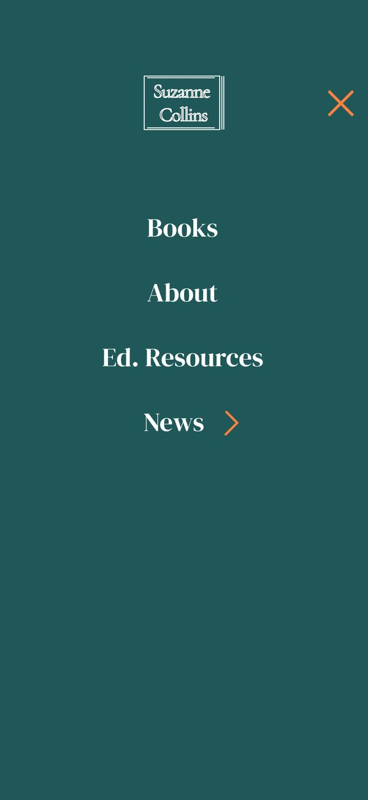
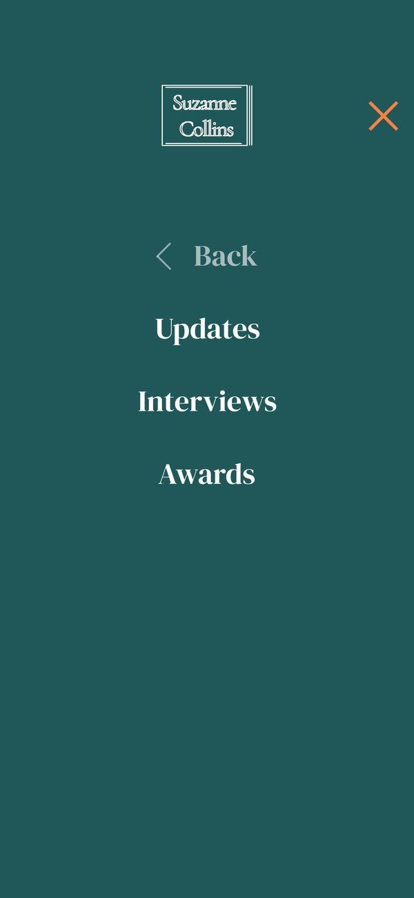
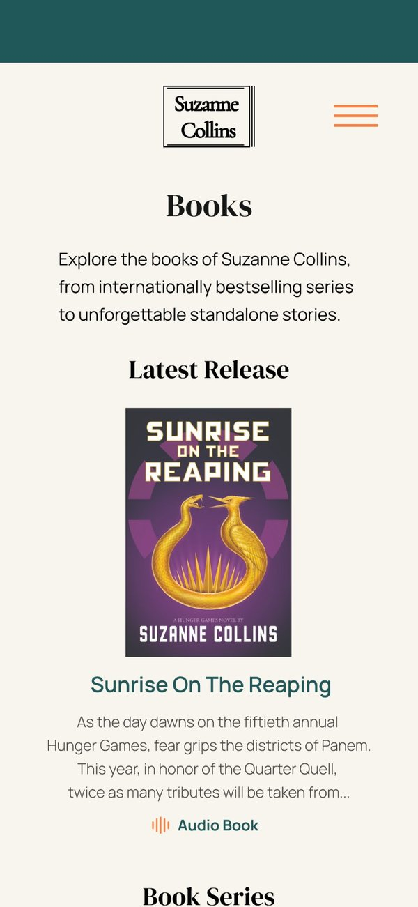
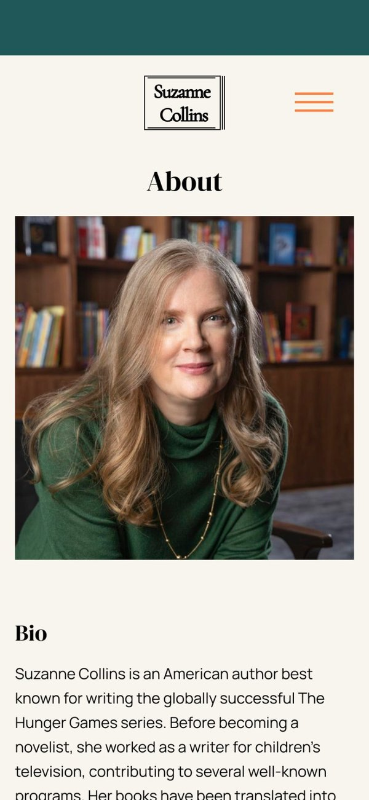
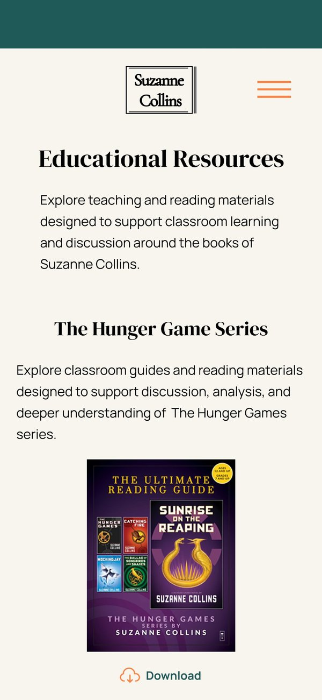
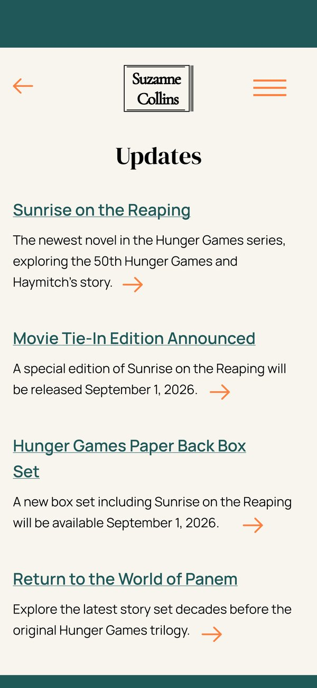
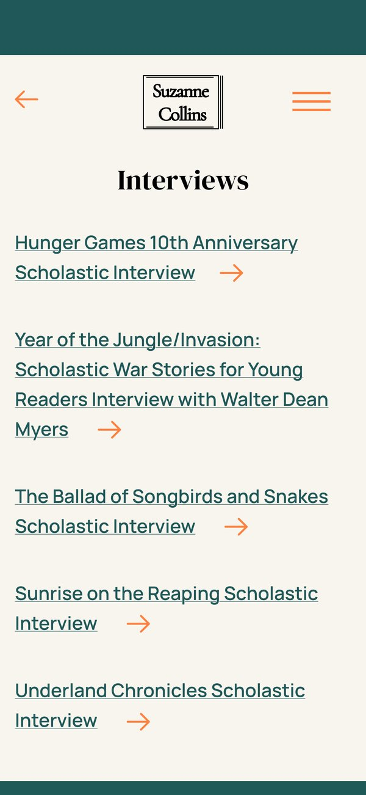
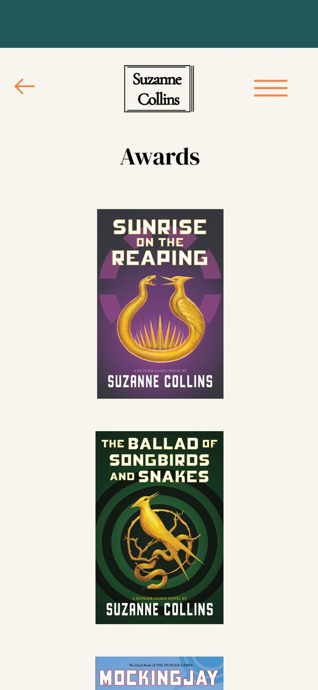
Takeaways
Building the structure around what readers need, and making small changes to layout, spacing and grouping, noticeably improved the mobile experience. Narrowing the site map was the biggest lesson: leaving things out made the rest easier to find.
Next, I’d run usability testing on the redesign to check that the fixes solve the problems people raised.